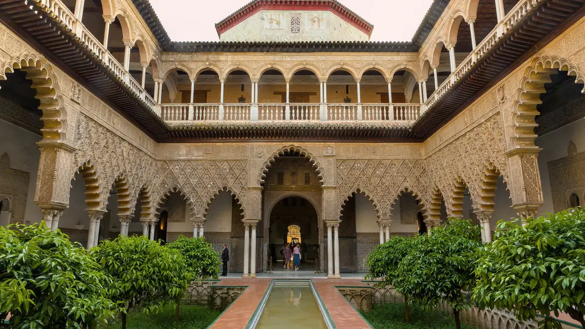

01
Real Alcázar
Palácio€ 15,50
o Cuarto Real Alto custa € 5,50 à parte

Benjamin Smith · CC BY-SA 4.0 · via Wikimedia Commons
Valor da entrada
Fonte: página Prepara la visita do site oficial do Real Alcázar (alcazarsevilla.org), consultada em 25/set/2026.
Entrada geral: € 15,50.
Entrada reduzida: € 8,00 — maiores de 65 anos, estudantes de 14 a 30 anos e portadores do Carné Jovem Europeu.
Cuarto Real Alto: € 5,50, cobrado à parte da entrada geral. É o andar onde a família real se hospeda quando está em Sevilha, e é a linha que quase nenhum roteiro soma — quem quiser ver tudo gasta € 21,00, não € 15,50.
Entrada geral: € 15,50.
Entrada reduzida: € 8,00 — maiores de 65 anos, estudantes de 14 a 30 anos e portadores do Carné Jovem Europeu.
Cuarto Real Alto: € 5,50, cobrado à parte da entrada geral. É o andar onde a família real se hospeda quando está em Sevilha, e é a linha que quase nenhum roteiro soma — quem quiser ver tudo gasta € 21,00, não € 15,50.
Quem não paga
Mesma fonte, mesma data. A lista é generosa e vale conferir antes de comprar:
Nascidos ou residentes no município de Sevilha.
Menores de 14 anos acompanhados de um adulto responsável.
Pessoas com deficiência a partir de 33% e um acompanhante.
Desempregados residentes na província, com documentação válida.
Pesquisadores acreditados e membros do ICOMOS.
Nascidos ou residentes no município de Sevilha.
Menores de 14 anos acompanhados de um adulto responsável.
Pessoas com deficiência a partir de 33% e um acompanhante.
Desempregados residentes na província, com documentação válida.
Pesquisadores acreditados e membros do ICOMOS.
Horário e fechamentos
Mesma fonte, mesma data.
Inverno, de 1º de outubro a 31 de março: 9h30 às 17h.
Verão, de 1º de abril a 30 de setembro: 9h30 às 19h.
A evacuação do recinto começa 45 minutos após o horário de fechamento — ou seja, a última hora útil de visita é antes disso.
Fechado: 1º e 6 de janeiro, Sexta-feira Santa e 25 de dezembro.
Inverno, de 1º de outubro a 31 de março: 9h30 às 17h.
Verão, de 1º de abril a 30 de setembro: 9h30 às 19h.
A evacuação do recinto começa 45 minutos após o horário de fechamento — ou seja, a última hora útil de visita é antes disso.
Fechado: 1º e 6 de janeiro, Sexta-feira Santa e 25 de dezembro.
Como se compra
Mesma fonte, mesma data. Há venda online e na bilheteira física — e uma restrição que pega quem chega com dinheiro em espécie: a bilheteira aceita apenas cartão.
O audioguia é acessado por código QR ou pelo aplicativo, e há um mapa em PDF para baixar.
O audioguia é acessado por código QR ou pelo aplicativo, e há um mapa em PDF para baixar.
Onde fica